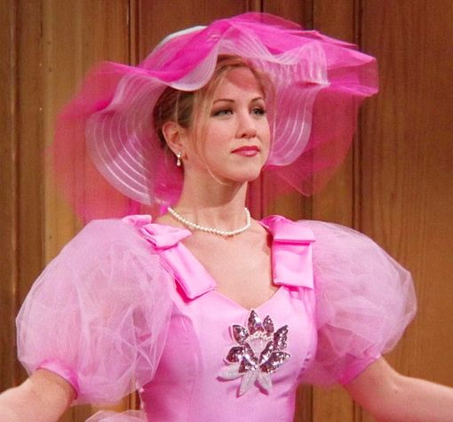
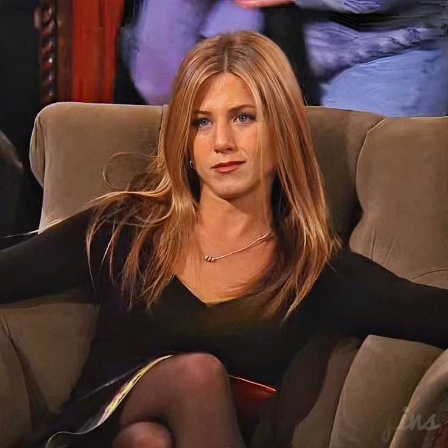
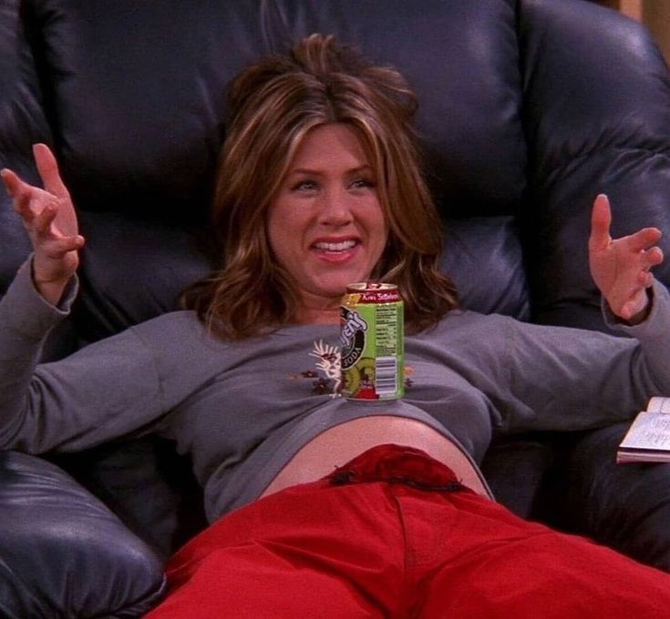

Conheça a Rachel Green
Rachel Green é uma das personagens mais icônicas de Friends. Sua história começa quando ela decide abandonar uma vida confortável para recomeçar do zero em Nova York, iniciando uma jornada cheia de amadurecimento, desafios e descobertas pessoais.
No início da série, Rachel é apresentada como alguém dependente da família e acostumada a ter tudo facilmente. Com o passar do tempo, ela aprende a lidar com responsabilidades, constrói sua independência e cresce tanto pessoalmente quanto profissionalmente, tornando sua evolução uma das mais marcantes da série.


Sua personalidade é divertida, espontânea e muito emocional. Rachel demonstra tudo o que sente de forma intensa, seja felicidade, insegurança, ciúmes ou amor. Seu jeito comunicativo e impulsivo cria momentos engraçados e inesquecíveis, trazendo leveza e humor para a história.
Outro aspecto importante da personagem é sua determinação. Apaixonada pelo mundo da moda, Rachel trabalha duro para conquistar espaço na carreira e aprende a acreditar mais em si mesma. Sua trajetória mostra força, persistência e a busca constante por seus objetivos.

Além de sua evolução pessoal, Rachel também é essencial para a conexão do grupo. Sua amizade com Monica Geller, as brincadeiras com Joey Tribbiani e Chandler Bing, e sua história com Ross Geller fazem dela uma personagem querida até hoje, conquistando diferentes gerações com humor, emoção e autenticidade.